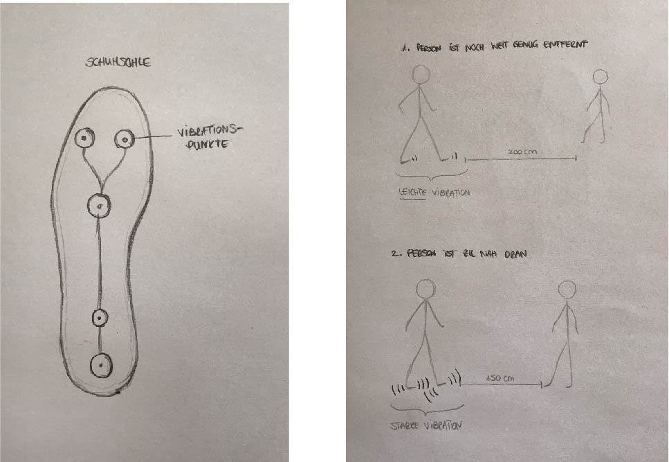
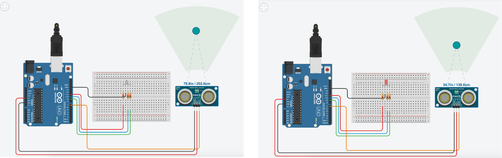

Aufgabe #010
Corona Distance Warning System
Mit diesem Konzept werden Personen gewarnt, wenn Abstandsregeln nicht eingehalten werden.

Corona Distance Warning System
Für die Umsetzung habe ich mit dem Arduino-Emulator Thinkercad von Autodesk einen ersten Entwurf entwickelt und habe mich für den Ultraschall-Abstandssensor entschieden.

Sobald der Abstand zwischen den Personen weniger als 150 cm beträgt, bekommt die Person eine Vibration im Schuh zu spüren. Anhand der Stärke der Vibration kann diese feststellen, wie kritisch die Situation ist. Ein starke Vibration bedeutet, dass die andere Person viel zu nah ist, eine leichte Vibration hingegen, soll bloß darauf hinweisen, dass sich eine Person sich nähert und schon ziemlich nah ist.